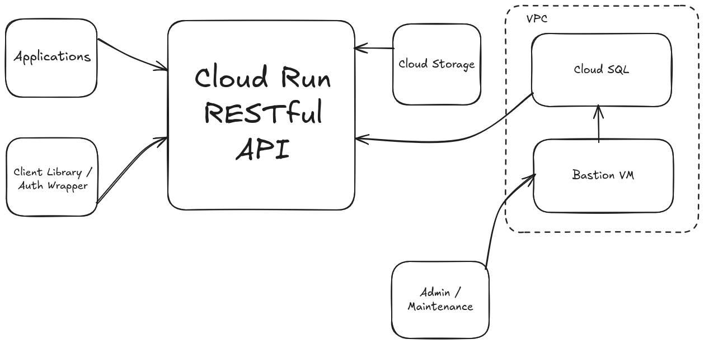
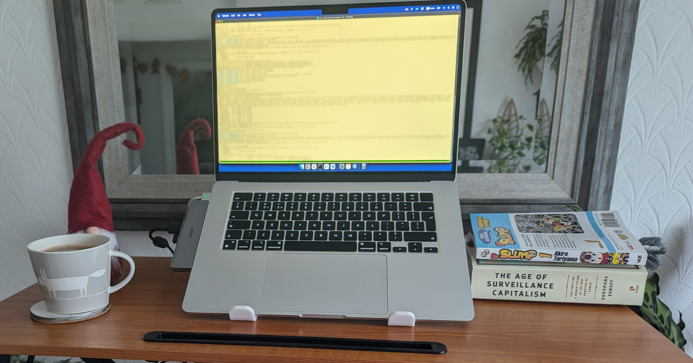
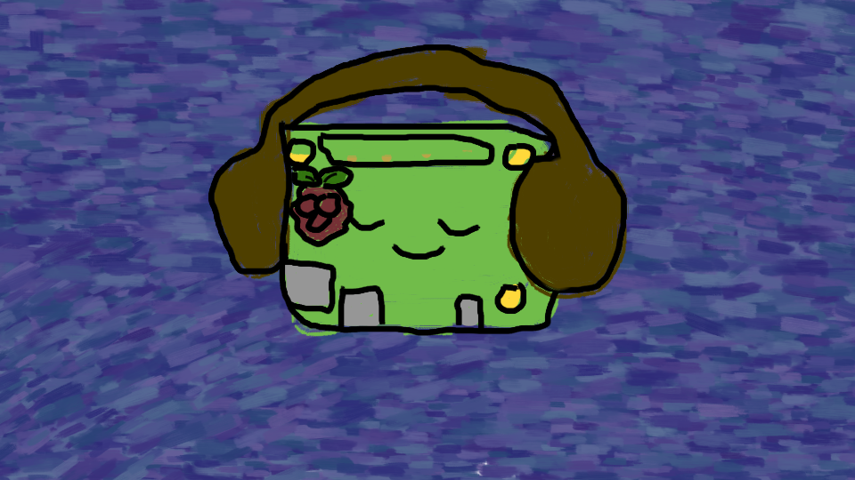
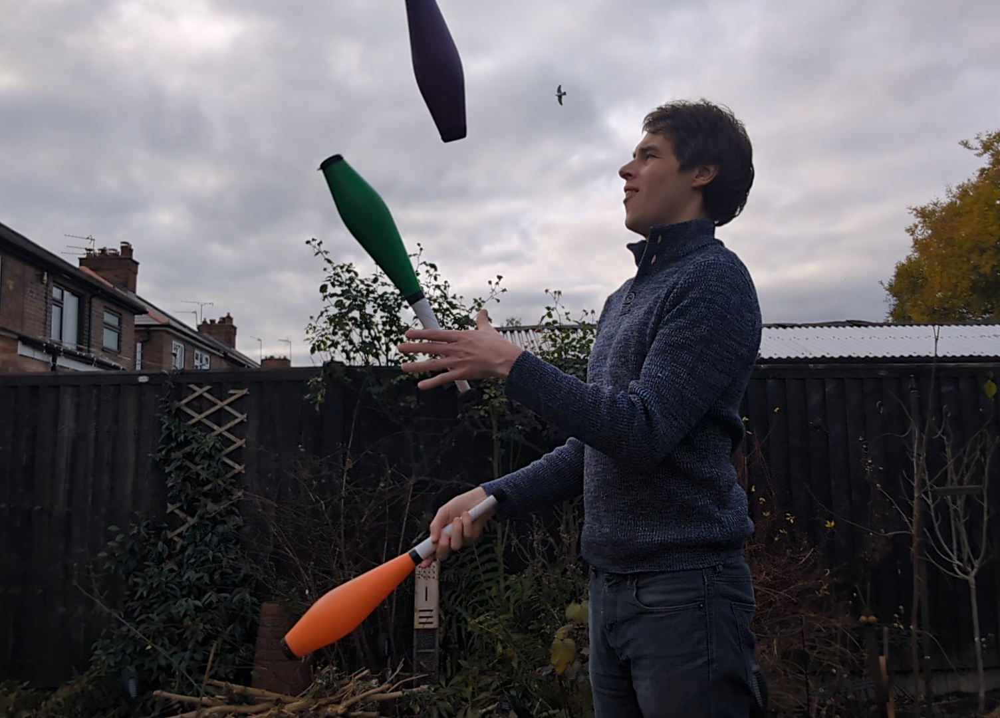
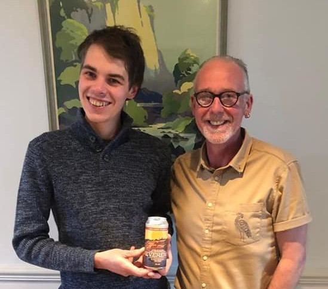
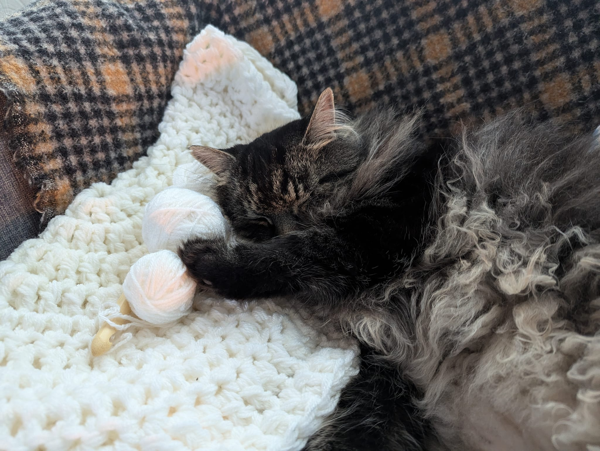
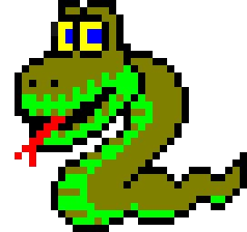

"Eliminate toil. Standardise workflows. Build durable abstractions."
Replace manual, fragile processes with pipelines and services.
Tooling and infrastructure that scales teams and workflows.
Convert recurring patterns into repeatable systems.
Measure, log, and make invisible complexity visible.
Take ownership of the stack from concept to production.






Problem: Fragmented workflows, inconsistent database schema and R&D teams reliant on 'snapshot' data requests.
Solution: FastAPI gateway with Workload Identity Federation (ADC), user-aware access, SQL-backed database, and Terraform-defined infrastructure. Provides R&D with data 'on-tap' for integration into workflows instead of manual snapshots.
Problem: Existing annotation UI was slow, brittle and experiencing scaling failures. Firestore-based tabular storage hit size limits; tools violated DRY principles and were difficult to maintain.
Solution: Rebuilt the platform with a SQL backend, class-based architecture, and a highly configurable data processing library. Enabled end-to-end workflows: select datasets, process, upload and mark for annotation in 4 lines of code with no monitoring required.
Problem: Previous lab capture software was unreliable, poorly synchronised and difficult for non-technical operators.
Solution: Built a fully offline, touchscreen-driven audio/video capture system with multi-camera support. State-machine-based architecture allowed easy integration of additional sensors (e.g., heart rate monitors) and flexible configuration for new study requirements.
Problem: Existing volunteer sign-ups were slow, manual, error-prone, and unscalable.
Solution: Privacy-first fullstack platform for study participation with dynamic forms, targeted allocation and admin tooling.
Problem: Manual job search and triage was slow and unscalable.
Solution: Scraping, normalisation, NLP scoring, LLM summarisation and automated ranking pipeline.
Problem: Locked to proprietary audiobook ecosystems with cloud voice systems; wanted privacy and offline control.
Solution: Offline audiobook player with voice control and persistent playback.
Problem: Wanted a personal API to experiment and demonstrate working knowledge of Java.
Solution: Built a Spring Boot API with Infrastructure as Code (Pulumi), CI/CD pipelines, and cloud-native deployment on Google Cloud.
Problem: Content scattered across decades, platforms and mediums.
Solution: Unified platform indexing 20+ years of work with metadata, tagging, NLP recommendations and RSS feeds.
Problem: Wanted to analyse win probabilities and difficulty of Auld Lang Syne solitaire.
Solution: Python simulator with recursive backtracking, memoisation and multiprocessing.
Problem: Juggling progress hard to quantify; avoided difficult patterns; wanted structured practice, progress tracking and structure archive.
Solution: Weighted random practice generator, archival system and analytics.
Data Ops Engineer — Nottingham, United Kingdom (January 2024 – December 2025)
Teaching Assistant — Remote (January 2024 – July 2025)
Development Team Lead — Remote (April 2021 – May 2023)
Indie Game Developer — Remote (May 2017 – January 2024)
Head Brewer — Matlock, United Kingdom (March 2015 – January 2024)
